時が進むたび、次の行き先を告げる “アナウンス” が流れ始める。
ワールドを転々と巡りながら、どこかへと向かっていく──。
そして辿り着いた先で、待っていたものとは……？
[再生リスト]
1年間を通して、フレンドの誕生日を祝う企画でした。
動画の最後に出る予告は、電車のアナウンスをモチーフにしています。
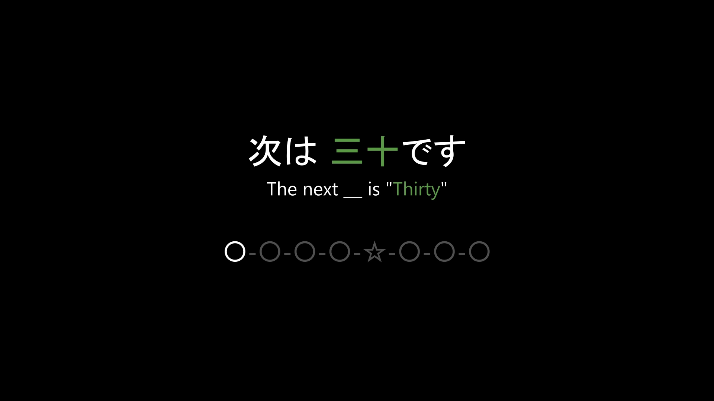
色がついてる所が駅名で、次の動画に出る記念品が何かを表しています。
丸や星が繋がってる所は路線図です。
路線図の左から1駅ずつ進み、終点の「無名駅」へ近づいていきます。
全8駅あり、並べると以下の通りです。
🚉 Birthday Line
フレンドの誕生日が来る度に、毎回動画と記念品を作っていました。
ただし、メインは「むめい」の誕生日を祝うことです。
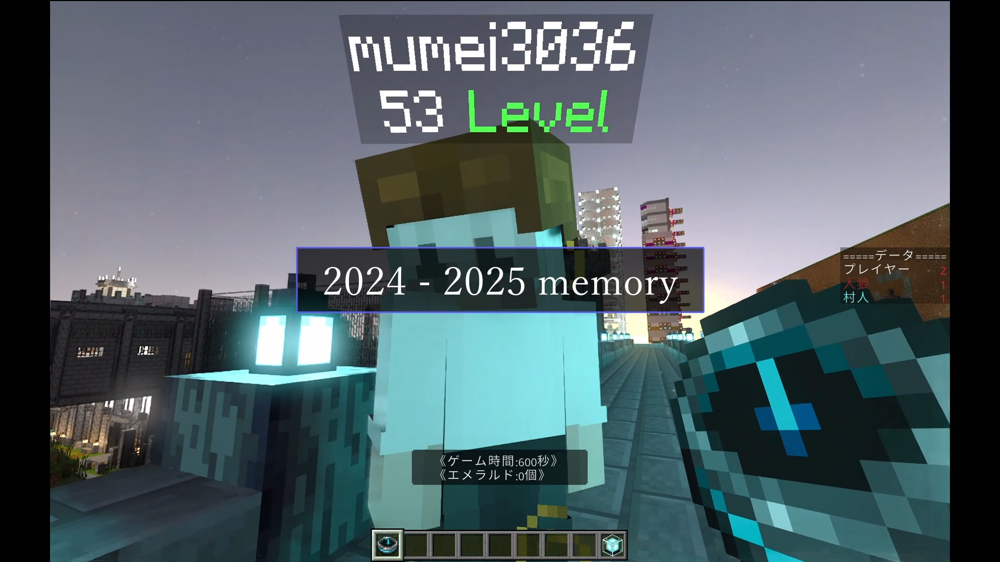
スターと仲の良いフレンドの中で、唯一誕生日を祝ってないのは「むめい」だけでした。
2年間別ゲーで遊ぶことも増えたため
その思い出をまとめた誕生日動画を作ろうと考えました。
つまり、これは「むめい」を祝うために1年かけて準備する計画でした。
無名誕生日記念動画で使用した建築です。
撮影したワールド
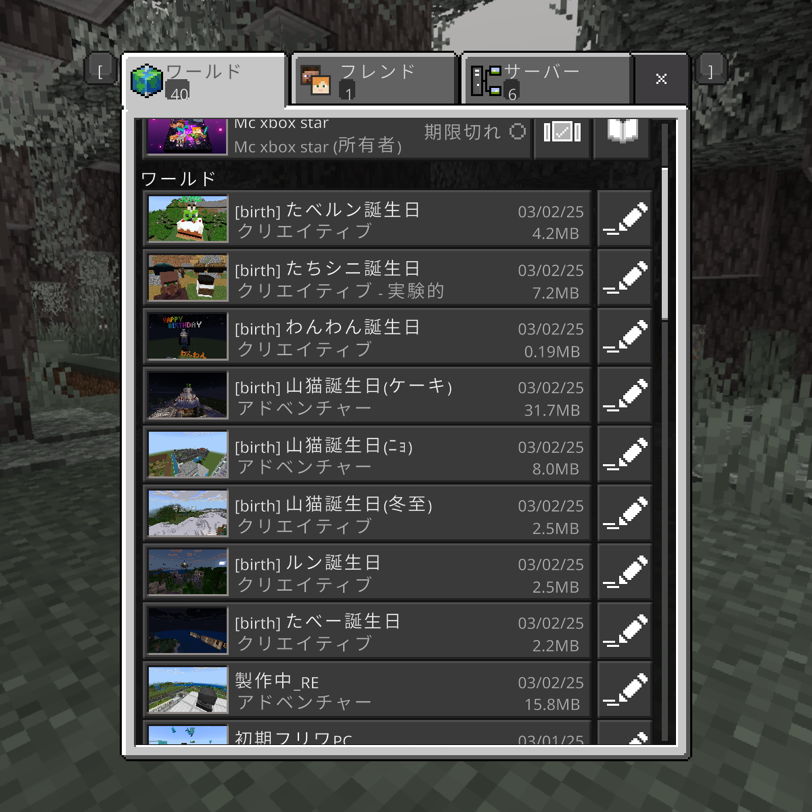
カメラ軌道
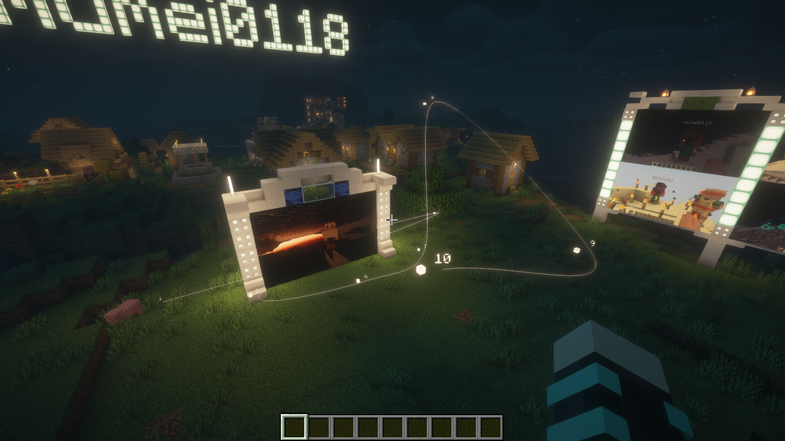
記念品製作
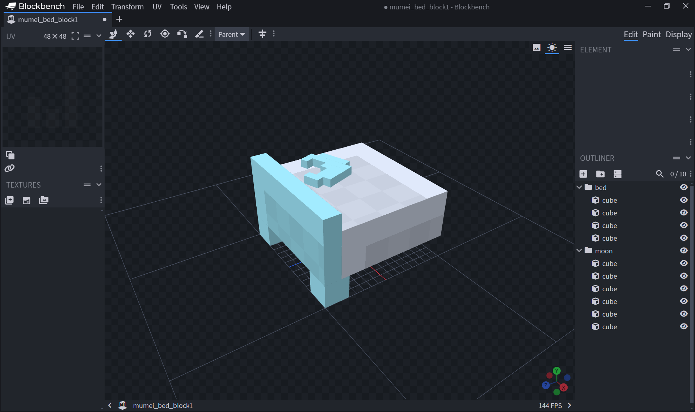
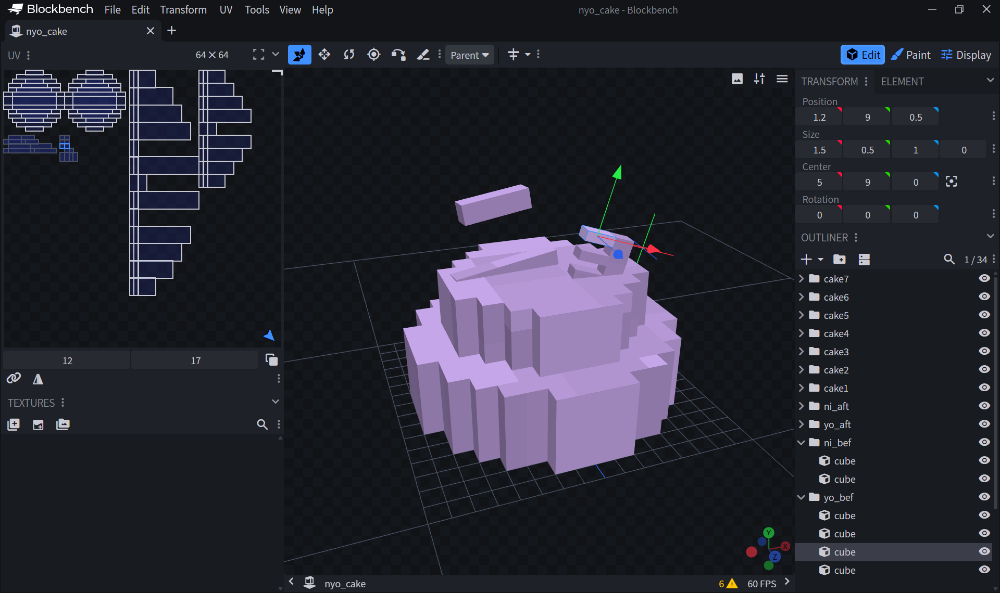
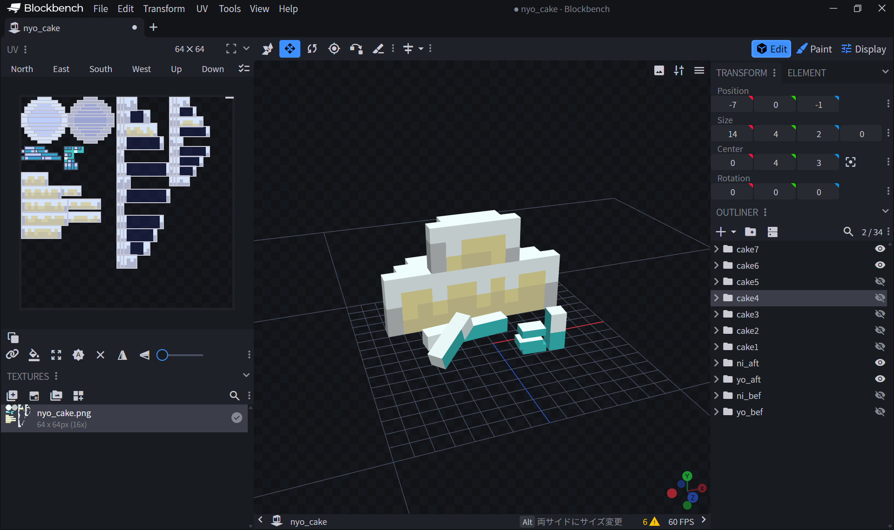
2024年エリア
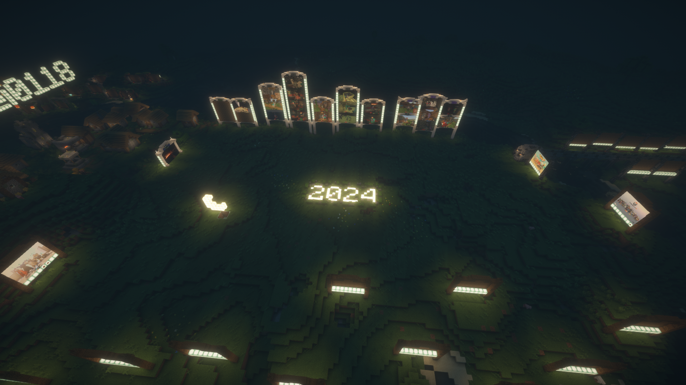
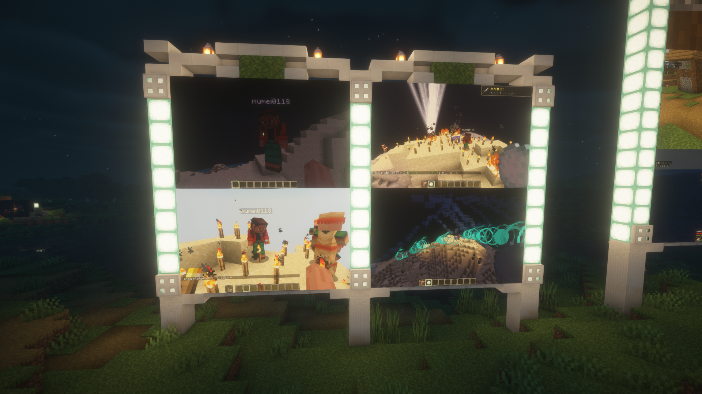
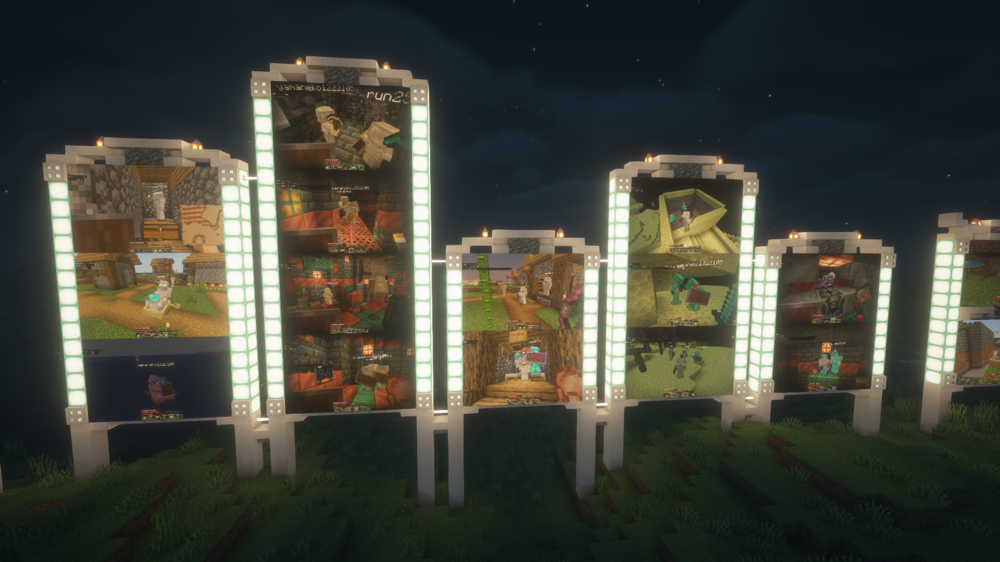
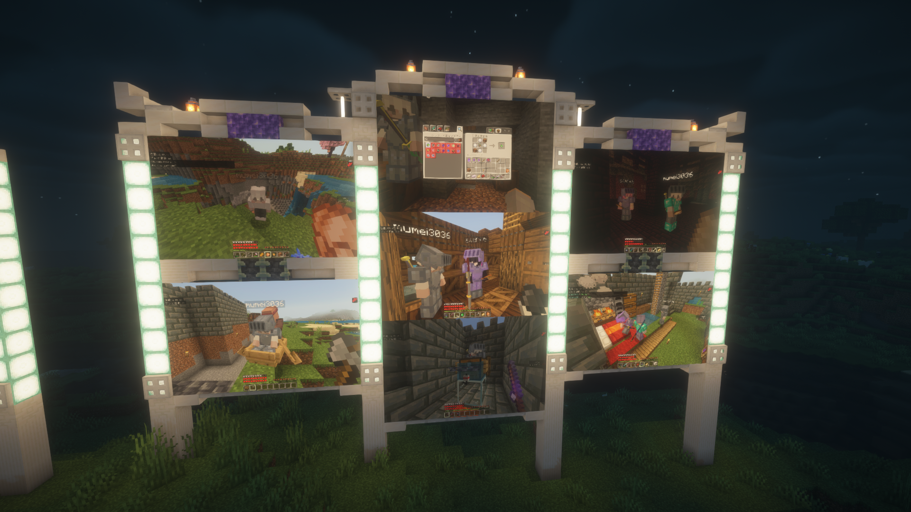


2025年エリア
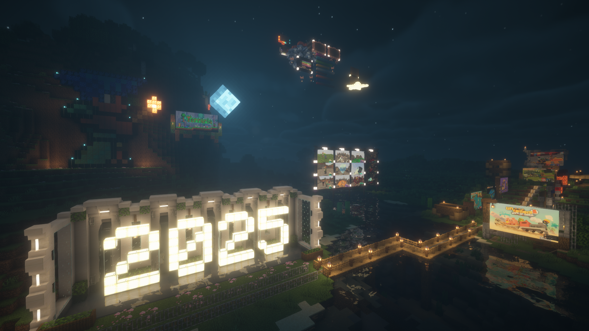


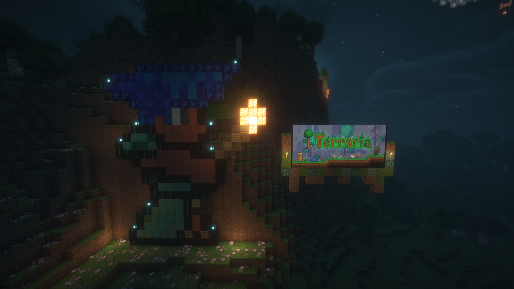
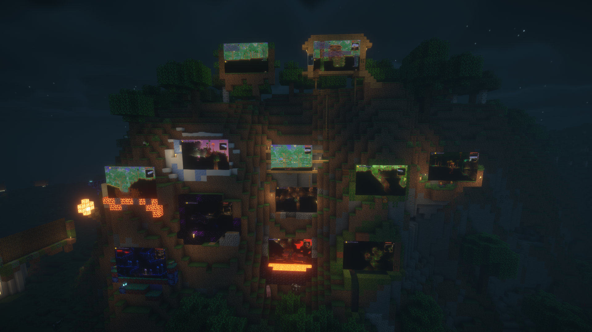
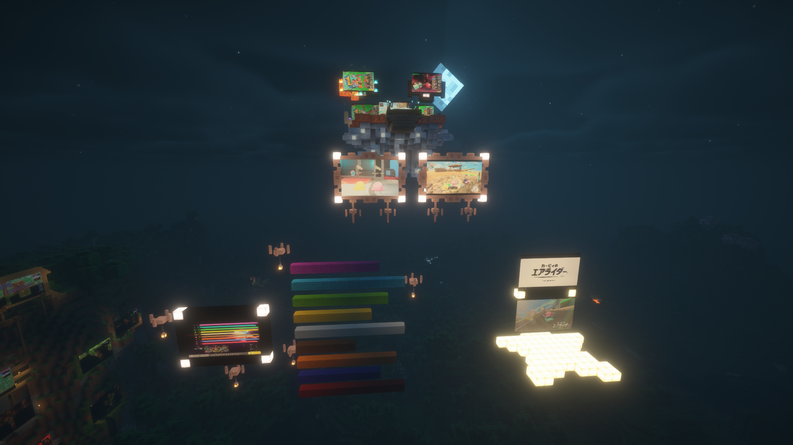
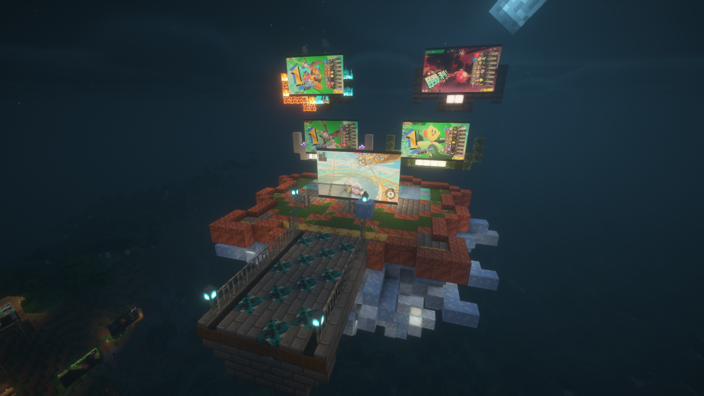
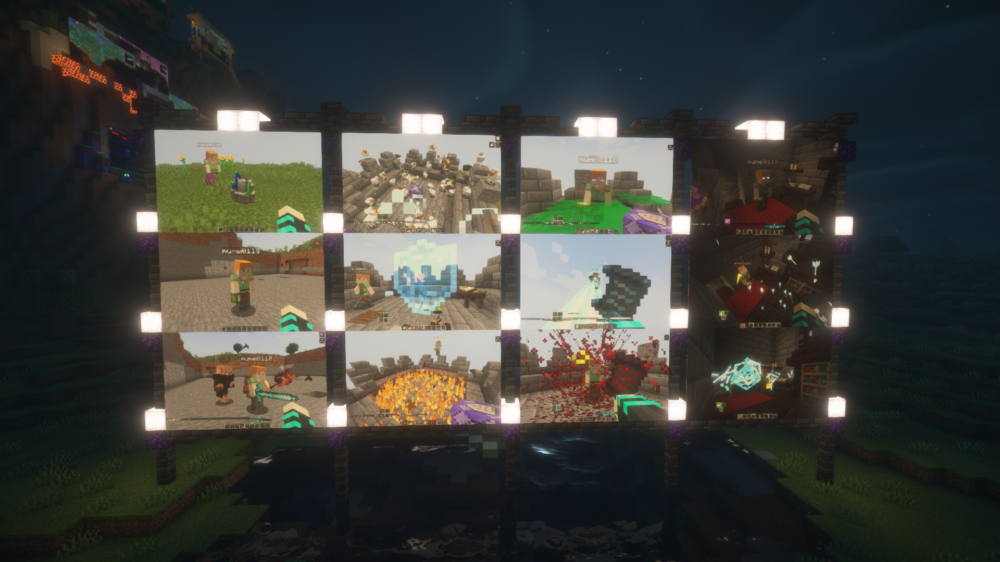